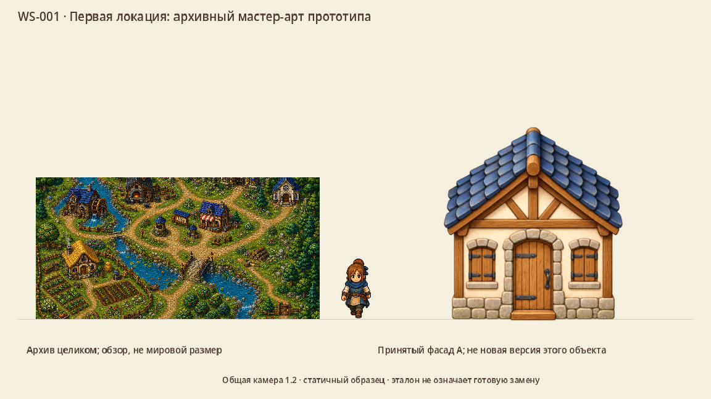

Сохранить полезное.
Заменить то, что мешает.
Решения по всем 29 семействам манифеста: крупный исходник, действительный владелец, видимый результат при 120% и конкретный объём будущей работы. Это план миграции графики, а не автоматическое удаление или импорт.
| ID | Семейство | Решение | Приоритет |
|---|
Сохраняем
Что предстоит сделать


Слева — выбранный существующий образец в размере владельца, в центре — текущий герой для масштаба, справа — принятый эталон материала или этюд стиля. Справа не обещанная готовая замена. WS-001 — обзор архива, его масштаб отдельно обозначен.
Файлы этого семейства из манифеста
Обзор всех 236 уникальных исходников
12 листов показывают исходные PNG целиком. Это обзор с уменьшением, не сравнение в мировом масштабе и не проверка каждой фазы анимации. 238 записей манифеста включают два повторных вхождения файлов; повтор не означает лишний файл.
Решения — результат аудита по уже выбранным стилю A, палитре A, краю A, фактуре B и свету сверху-слева. Новые production-рисунки, все анимации и слои эффектов будут показаны и приняты в своих карточках. Ни один файл игры этим аудитом не удалён и не заменён.